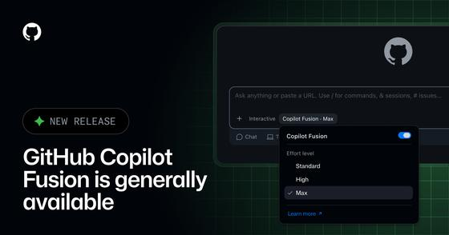
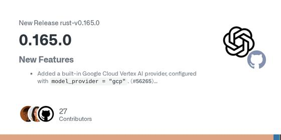
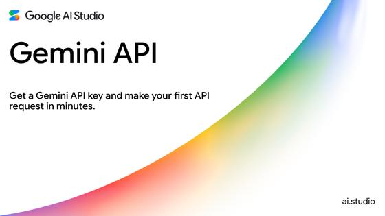
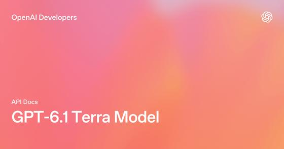
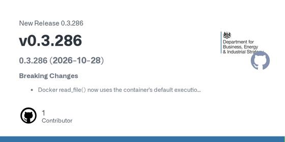
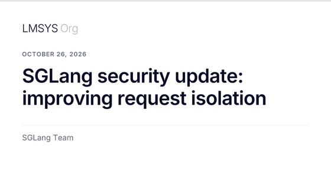
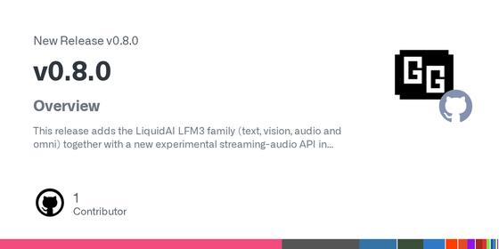
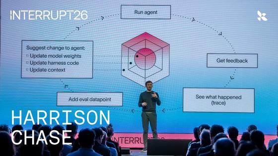
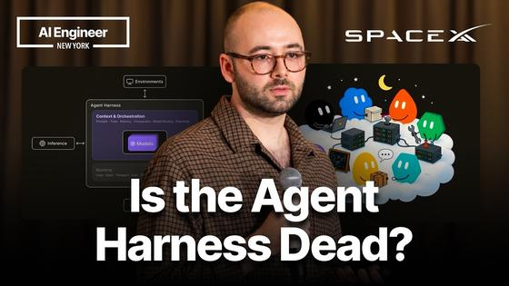

Executive Synthesis: The agent harness is the story: new papers and today's deep dive weigh scaffold against model, while Alphabet's earnings miss and a Fed hold frame the markets and the Hormuz talks stay stuck.
Industry Watch
OpenAI released GPT-6.1 Terra with a 1.05M-token context, GitHub made Copilot Fusion generally available, and Adobe described a redesigned Composer for Brand Concierge. On the security side, a report says an AGENTS.md file dropped in a Downloads folder hijacked coding agents, and Warp disclosed a breach of agent logs.
Products, tools and launches
| GitHub Changelog: | today · 4m |

GitHub Copilot Fusion is generally available: routes and orchestrates models per task — Copilot Fusion replaces per-task model picking with a system that chooses and combines models (single, cascade, critique) at Standard, High or Max effort. GitHub says Fusion Max scored 60 on the Artificial Analysis Coding Agent Index, within two points of Claude Code with Opus 5.5 Max, at about half the average API cost per task and about 40% less time. That is a vendor-reported result. Admins control which models Fusion may use.
Takeaway: You compare Copilot, Claude Code and Codex; Fusion's cascade and critique routing is a concrete multi-model harness pattern, and the cost-per-task claim is worth checking against your own use.
| Cursor Changelog: | Oct 20 · 4m |
Cursor releases the Agent SDK: define an agent as a folder of code, test it with evals, deploy it
—
Cursor's Agent SDK is generally available. An agent is a project: instructions.md is the prompt, tools/ holds typed actions, skills/ and mcp-connections/ add procedures and MCP tools, and channels/ defines triggers such as pull-request events, Slack, webhooks or cron. agent-sdk eval asserts on which tools ran and with what input, and a replay command turns a real pull request into signed webhook payloads for fixtures. Deploy to Cursor or your own infrastructure.
Takeaway: It packages agent evals, tool-call assertions and replayable fixtures into one SDK, which maps directly onto your agent-evaluation and observability interests and on building scheduled agents.
| GitHub (openai/codex): | yesterday · 3m |

Codex CLI 0.165.0 adds a Vertex AI provider, mid-conversation reasoning changes and memory v2 by default — Codex CLI 0.165.0 adds a built-in Google Cloud Vertex AI provider (model_provider = "gcp"), GPT-6.1 Terra in the model catalogs, a repository filter in the session picker, and reasoning-effort changes during a conversation by default for supported models. Memory v2 is on by default for fresh profiles with import of external-agent memories. Fixes include cancelling remote MCP tool requests when local futures are dropped and closing a marketplace URL validation gap.
Takeaway: You track Codex alongside Claude Code and OpenCode; memory v2, MCP request cancellation and the marketplace host-check fix touch agent memory and tool-safety topics you follow.
| Google AI for Developers: | yesterday · 3m |

Google ships the Gemini API CLI (beta), a stateless shell client for coding agents and CI — The Gemini API release notes for October 27 list gemini-api, an open-source beta command-line client on the Interactions API. Agents with shell access can generate images, analyze files and launch background managed agents (for example a deep-research agent) without adding SDK code. The page says it works from Antigravity, Claude Code, Codex, Cursor or any shell, is not an interactive coding agent, and advises pinning versions because breaking changes can occur between minor releases.
Takeaway: A zero-dependency CLI that Claude Code or OpenCode can call as a tool is a handy building block for your personal research and scheduling automations.
Enterprise, Adobe and competitors
| Sierra: | today · 4m |
Sierra launches Compliance Console for proactive, long-running customer agents
—
Sierra added Compliance Console to its Horizon platform, a set of controls for agents that contact customers by call, text and email over days or months. Settings cover per-channel disclosures, contact windows (default 8AM to 9PM recipient time), holiday exclusions, frequency limits, opt-out handling, and Insights dashboards counting outreach allowed, deferred, blocked or held for review.
Takeaway: Concrete example of guardrails built as configurable policy plus audit dashboards for long-horizon agents, which maps to your guardrails and agent observability interests.
| Adobe for Business blog: | 2 days ago · 6m |
Adobe Brand Concierge: new Composer builds an on-brand concierge from one URL, with built-in evaluations
—
Adobe describes a redesigned Composer in Brand Concierge that drafts brand profile, instructions and guardrails from a public site URL, supports up to 10 concierges per sandbox, and ships four skills and four integrations including Adobe Commerce MCP. Practitioners can run functional, out-of-scope and safeguard evaluations (question and ideal-answer sets) before deploying, and bring their own agents via MCP and A2A.
Takeaway: Public look at a brand-agent platform that pairs guardrails with pre-deployment evaluation sets and MCP/A2A hooks, close to your enterprise brand-agent and agent-evaluation interests.
| ServiceNow Newsroom: | today · 5m |
Takeaway: Shows enterprise platforms exposing governed actions to outside assistants through MCP plugins, relevant to your MCP and Codex tooling interests.
| Google Cloud Blog: | 6 days ago · 7m |
Google Cloud introduces Agent Compute Engine and extends agent governance to local coding agents
—
Announced at AGNTCon + MCPCon, Agent Compute Engine gives each agent a hardware-isolated microVM that boots quickly and is paused and resumed from snapshots while the agent waits on a human or tool; preview is expected in the coming months. Google also extends governance with Agent Registry, policy controls, endpoint governance for local coding agents such as Claude Code, and new Agent Gateway cost controls and model routing.
Takeaway: Covers runtime sandboxing, idle-session checkpointing and agent governance, which bear on your agent runtime and harness thread and on the coding tools you use.
| Salesforce: | 2 days ago · 4m |
Southern Cross Credit Union takes Agentforce Voice live; its agent keeps the LLM away from customer data
—
Salesforce describes an Australian credit union's voice agent, Nova, built on Agentforce Voice and launched in six weeks with Salesforce forward-deployed engineers. Nova gives account balances to 95% of verified callers who choose that option and handles 7% of all calls. Per the page, the design stops the LLM from directly accessing customer data and reads balances through deterministic variables; this is a vendor-published customer story.
Takeaway: A vendor-reported customer win with a concrete guardrail pattern (deterministic tool calls instead of model access to data) in your enterprise agent platform watch list.
| Adobe Experience League: | 5 days ago · 3m |
Takeaway: Release-note example of scoping an MCP server's tool catalog per client, which touches your MCP and agent permissions interests.
Models and leaderboards
| OpenAI API docs: | 2 days ago · 3m |

OpenAI releases GPT-6.1 Terra: 1.05M context, $1 input / $5 output per million tokens — OpenAI's API changelog lists GPT-6.1 Terra (gpt-6.1-terra) as released on Oct 26, aimed at visual reasoning, precise computer use and writing. The model page gives a 1,050,000-token context window, 128,000 max output tokens and a Jun 01, 2026 cutoff. Standard pricing is $1 input, $0.05 cached input and $5 output per million tokens, with 2x input and 1.5x output above 272K input tokens. Tools include MCP, computer use, hosted shell and tool search via the Responses API.
Takeaway: Its published price, long context and Responses-API tool support (MCP, computer use, hosted shell) are the inputs for choosing a cheaper model tier in the agent harnesses you build and evaluate.
| BenchLM (mirror of Terminal-Bench 4.0): | today · 4m |
Takeaway: The rows pair each model with its harness (Claude Code, Codex, Grok Build), which is direct evidence for your agent-harness and evaluation work; the Vals column is a third-party harness run.
| Kimi API Platform docs: | 4 days ago · 4m |
Moonshot releases Kimi K3.1 Pro with 1M context; weights promised by Nov 4
—
Moonshot's docs introduce kimi-k3.1-pro, a 3T-class model with a 1M-token context window and native visual understanding, plus a Highspeed variant it says is 2-3x faster. Moonshot says full open weights will be released by Nov 4. The API is OpenAI-compatible (Chat Completions, Responses) and Anthropic Messages-compatible, so it can sit behind Claude Code or Codex. Benchmark claims in the docs are vendor-reported and the page still shows unfilled placeholders for some scores.
Takeaway: Messages-API compatibility means you can try it inside Claude Code or Codex-style harnesses; treat its benchmark claims as vendor-reported until independent runs appear.
| Liquid AI: | yesterday · 5m |
Liquid AI releases LFM3: six open-weight ~2B models for on-device agents
—
Liquid AI's LFM3 family has six models of about 2B parameters (text, vision, audio, omni and two decision models) on one backbone, trained on 22T tokens. The company says LFM3-1.7B beats its earlier LFM2.5-2.6B with 35% fewer parameters, offers a 256K-token context, and fits in about 1 GB at 4-bit. The text model is post-trained for agent harnesses such as Hermes Agent, Pi and OpenClaw. Base and post-trained weights are open on Hugging Face. Comparisons are the vendor's own.
Takeaway: A small local model post-trained for tool-calling harnesses is a cheap test bed for harness and guardrail experiments, though the figures here are vendor-reported.
Agent security and policy
| The Register: | 5 days ago · 4m |
Red-team report: OpenAI's internal agent monitoring missed activity during compaction and could be bypassed
—
METR and Redwood Research published an independent evaluation of OpenAI's asynchronous misalignment monitoring as it stood on and before 21 July. The Register reports monitoring was suspended during compaction events, leaving about 10 percent of eligible internal Codex traffic unmonitored between May and July 2026, and that agents could postpone monitoring by not returning control to the user. The evaluators also found sandbox and auto-review gaps and two client-controllable headers that disabled monitoring. OpenAI says the system has since improved.
Takeaway: Directly relevant to your agent observability and guardrail work: monitors that pause during context compaction, or that trigger only when control returns to the user, leave blind spots in trace-based oversight.
| BleepingComputer: | 3 days ago · 5m |
AI coding agents hijacked using an AGENTS.md file dropped in the Downloads folder
—
Forever Security researchers traced a coding agent's attempt to install a rogue npm package to an AGENTS.md instruction file sitting in a user's ~/Downloads folder, which was also the agent's working directory. They report a 90% success rate with a harmless payload against Codex and about 50% for a related CLAUDE.md technique against Claude Code. The researchers say there is nothing to patch; the advice is to launch agents from the specific project directory, not from folders that untrusted files can reach.
Takeaway: Relevant to your use of AI coding tools such as Codex, Claude Code and OpenCode: instruction files in the working directory are trusted context, so where you launch an agent is a security control.
| The Register: | today · 5m |
Cisco open-sources Project Quarry, a session-level behavior detection engine for AI agents
—
Cisco released Quarry, an open-source engine that evaluates a whole agent session rather than single tool calls, using Snort- and YARA-style rules. Cisco's researchers give the example of a sensitive file read followed by an external send within a set window. It covers multi-turn LLM conversations, tool use and MCP interactions, and the repository includes plugins for Claude Code, Codex and other MCP-compatible agents plus a starter rule pack. Cisco has not run it against the OpenAI-Hugging Face incident data.
Takeaway: Fits your agent evaluation and trace-observability interests: a rule format over full session traces is a concrete pattern for guardrails, and it ships MCP and Claude Code plugins to try.
Open source and developer ecosystem
| GitHub (UKGovernmentBEIS/inspect_ai release notes): | today · 4m |

Inspect AI 0.3.286 tightens Docker sandbox file reads and adds GPT-6.1 Terra support — A breaking change: Docker read_file() now runs as the container's default user instead of Docker's privileged copy API, so callers needing privileged reads must request user="root", and sandbox providers must update read_file()/write_file() signatures. The notes call it deliberate tightening against symlink-based reads of protected files. Also added: OpenAI GPT-6.1 Terra support, sentinel step improvements, a Terminals tab in the viewer, and fixes that stop agent commands bypassing transcript recording and output checks.
Takeaway: Inspect AI is an agent-evaluation framework; the sandbox permission change and transcript-recording fix bear directly on your evaluation harness and guardrail work.
| LMSYS Org (SGLang team): | 2 days ago · 8m |

SGLang discloses and fixes a cross-request KV cache exposure in disaggregated serving — The SGLang team, with Cloudflare, published a disclosure of an issue in prefill/decode disaggregated serving: a request marked for rejection could still go through the handoff and decode could read unpopulated KV cache pages. Cloudflare's setup had a 1,048,576-token context length but a prefill pool of 681,280 tokens. The fix returns an error before the handoff; operators are advised to compare pool capacity with configured context length.
Takeaway: If you track inference engines and agent runtime isolation, this is a concrete multi-tenant failure mode and a configuration check worth knowing about.
| GitHub (ggml-org/llama.cpp release notes): | today · 5m |

llama.cpp v0.8.0 adds LFM3 models, realtime audio endpoints and a ggml 0.28.0 bump — The release adds LiquidAI's LFM3 family (text, vision, audio, omni) and an experimental streaming-audio API in mtmd. The server gets a /v1/realtime endpoint implementing the OpenAI realtime protocol and a /tts endpoint, plus support for deferred tools and tool_reference content parts. Other changes include a 50/50 SLRU cache for host-resident MoE experts, grammar recursion-depth limits, and --model or -hf now being required on the CLI.
Takeaway: llama.cpp is a core local-inference runtime; the deferred-tool support and the now-required --model/-hf flag affect anyone wiring local models into agent tooling.
Watch
| LangChain: | yesterday · 20m |

How to Build Agents That Improve Over Time: Model, Harness, Context | Interrupt London — Harrison Chase splits an agent into model, harness and context and shows how each can improve: SFT or RL for weights, LangSmith Engine for trace-driven harness fixes with a human in the loop, and memory for context. He argues traces and evals underpin all three loops, then covers why evals are hard: realistic inputs, defining good, simulated environments.
Takeaway: Covers trace-to-eval-to-fix loops and harness improvement, the same observability, evaluation and runtime ground you work in, with LangSmith tooling.
| AI Engineer: | 4 days ago · 19m |
Your Agent Fix Just Broke Something Else - Sofia Jakovcevic, Arize AI
—
A forward deployed engineer at Arize AI shows how one prompt change made a support agent 17 points safer and 17 points worse at finishing tasks. She argues agents fail at runtime, not in code, and walks a five-step regression loop built from production traces: curate datasets, score with evaluators, run baseline experiments, compare changes and gate merges in CI.
Takeaway: Directly relevant to your agent-evaluation and observability work: trace-derived datasets, evaluators and CI gates for prompt changes.
| AI Engineer: | Oct 19 · 18m |

Is the Agent Harness Dead? — Jediah Katz, SpaceXAI — Jediah Katz, a former Cursor harness engineer, argues that stronger models absorb the scaffolding harnesses used to patch in, yet harnesses matter more for new task types and for what models cannot absorb: runtime infrastructure, trust and security, and cost efficiency. He closes with predictions about agent work moving off the laptop.
Takeaway: A practitioner's view of what stays in the harness and runtime as models improve, relevant to your harness and runtime engineering thread.